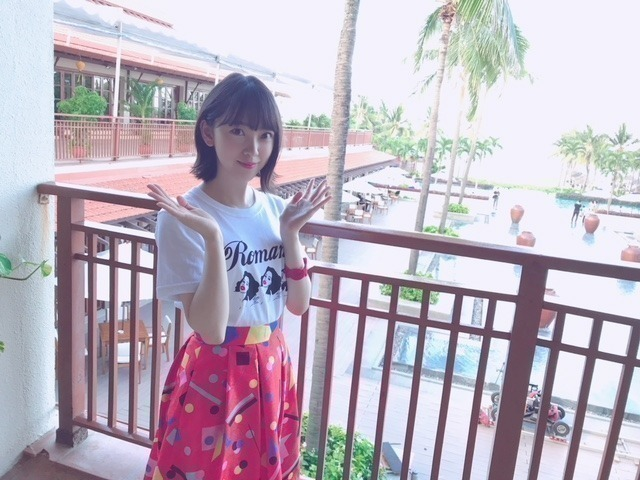

2018/0819Sun染めたい染まりたい
こんにちは〜
志乃ちゃんは自分の名前が言えない
君の名前で僕を呼んで
を最近は観ました。
繊細さと大胆さの共存が魅力でストーリーや登場人物はもちろん音楽も風景もファッションも良いの！
あーまた観たいなと思える2作品でした
「志乃ちゃんは自分の名前が言えない」
ここさけを見た時に似た感情が
あったかなぁ
伝えたいこと、知りたいことがあって
でも言えない 飲み込んでしまう言葉がいくつもある、もどかしさ。辛さ。
少なくとも周りの環境や人も影響はしているけど自分自身との戦いでもあって、私はずっと
がんばれ。って応援しながら観ていました。
言葉の大切さと怖さを同時に痛感することのできる映画は好きです
志乃ちゃんの心の色みたいな優しい音楽、
消えてしまいそうな時間に見える景色や光、
個人的に大人への近道のMVで思い入れのある場所もたくさん出てきて懐かしくもなりました

MV撮影から2015.9月だからもうすぐ3年！
この時の悔しさ 楽しさを何ひとつとして忘れたくないなぁ
ここがあるから頑張れる。頑張りたいです。

「君の名前で僕を呼んで」
同性愛を描いた映画なのですが
壁を感じる恋に対する葛藤 劣等感 幸せ
主人公の目の奥にはいつも彼に対する愛が存在していてふとした仕草1つ1つに目が離せませんでした
音楽も街並みも可愛くて
ファッションもね、色の合わせ方や肌の感じがおしゃれでゆるくてステキでした
車もラジオもプールもなにもかもがかわいい
恋はその人自身のものでしかなくて...
たった1人の好きな人の存在が自分の全てを大きく揺さぶりどうしようもなくなることもあるんだなぁって。
家族も素敵でした
"かけがえのないもの"について考えさせられる映画でした
EX大衆さん 表紙をさせていただいています
発売中です
撮影は、台風の日でしたが
凄くマイペースに撮影させていただきました...

ゆっくりゆっくり動く恐竜
を見て笑う私

なんとも言えない顔
クリアファイルもついています！是非。
新曲 ジコチューで行こう
のオフショットを見返したらね、

見事にほぼほぼ、このポーズをしていました。笑
笑っちゃう
また載せます
では、また〜
涼しいね〜
2018/08/19 17:54


コメント(457)
ショールーム木曜日楽しみです。
みおなのおかげでホラー映画が好きになっちゃった笑
好き！
みお造染まる、、
乃木坂に染まる、、
「君の名前で僕を呼んで」
こんなにも綺麗で繊細で色鮮やかで、普遍的な人の恋愛/愛情を描いた映画は素敵だよね、見終わった最後じんわりと涙が出てきた...
たぶん知ってると思うけど、他に恋愛をテーマにした映画だと「アデル、ブルーは熱い色」も素敵だったなぁ
失恋した時にみて心がだいぶ救われたよ
みおなちゃんの映画評いつも楽しみに拝見させてもらってるので、またいい作品に出会ったらぜひシェアしてほしいな(^^)
いつもありがとう、これからもよろしくねー
可愛い❤
SONY
観てますね～～(笑)
5人組。懐かしいですね。
ビームさ～ん(笑)
神様に語るには不十分すぎる
映画観率ですが～
とりあえず君の膵臓をたべたいが映ってます(笑)
浜辺美波さん可愛すぎるね(笑)
女心を♪
16日くらいから急に秋空になってませんか？
涼しいですね。
過ごしやすい。
運動会したくなる(笑)
このまま秋に･･･はならないんでしょうね～
台風の日だったんですかお嬢様！
あ～～だからインドア･･･(笑)
ほぼ同じポーズとか(笑)
そろそろ名前を付ける頃かもね～～
サンクエトワール...♡
ex大衆買ったよ〜✌️
買ってるとこ友達に見てたんだけどかわいいねって
言われて嬉しかった！
今週の名古屋公演は2日とも行くから楽しもうね！
今、君膵を観ながら書いています。
未央奈ちゃんが思うこと、感じることを書いてくれると
未央奈ちゃんのことがだんだんとわかってきて、
より身近に感じることができます！
でもまだわからないことがたくさんあります！！
だから応援しますね！！
頑張ってください！！！
ブログ更新ありがと♡
EX大衆買ったぞ〜！！！
どれも可愛すぎるよ〜！
表紙から最高でした。
台風の日に撮影だったんだね(°_°)
EX大衆とっても可愛かったよ！
急に気温が下がったりしてるから体調崩さないでね。
いつも応援してるよ。
シングル、4枚買って、
堀ちゃん2枚出てきました
ありがとー
ワクワク
サンクエトワール。
目が曇って画面が良く見えないや・・・
大人への近道からもう3年かぁ。
サンエト好きだったなぁ。
みんな歌声が違うから聴いてても誰のパートがすぐ分かるもん。
ほら、かなりんの「ねっとり」なところとか、
はっきり真っ直ぐ強めの声とかね。
堀ちゃんのブログを見てて言葉がどんなに大切なのか、改めて分かった気がします、ありがとうございます
来週から名古屋公演！私は行けませんが応援してます
嫌なやつ！嫌なやつ！(終わりの挨拶笑)
ブログありがとうございます
いやあ新作観れてないなあ
旧作では最近見た邦画
夜空はいつでも最高密度の青色だ
彼女の人生は間違いじゃない
いつの映画であっても初めて観たときが自分にとっての新作だ
ってことにしといて笑
もうひとつ最近初めて観た
ルキノ・ヴィスコンティ監督のベニスに死す
同性愛と言うか、倒錯した、そして悲しい話だった
また印象に残った映画を紹介して下さい。
楽しみにしてます。
チャァオ～～!☆彡
ミオッキ～～～は、やっぱり優しい色の淡いピンクが似合うねぇ～～⤴⤴❕❤❤❤❤❤❤❤❤笑顔
ニコニコ～～❕❤❤❤❤❤
お顔のお肌の色まで、素敵にピンクになっているねぇ～～⤴⤴❕❤❤❤❤❤❤❤❤笑顔
「なんとも言えない顔」❕❔・・・
いい～～じゃん❕❤❤❤❤❤笑顔
いい～～じゃん❕❤❤❤❤❤笑顔
このお顔大好きだよぉ～～～⤴⤴❕❤❤❤❤❤❤❤❤❤❤笑顔
お家で家族といる時ってぇ～～⤴⤴
こんな感じの生活感があって凄くいいけどなぁ～～～⤴⤴❕❤❤❤❤❤❤❤❤❤❤❤❤笑顔
あるある感があって、好きだよぉ❕❤❤❤❤❤❤❤❤❤❤❤❤❤❤❤❤❤❤笑顔
よくやるポーズ❕❤❤❤❤❤・・・
ミオッキ～～～⤴⤴⤴
とても綺麗可愛いぃ～～ねぇ～～⤴⤴⤴❕❤❤❤❤❤❤❤❤❤❤❤笑顔
きまっているよぉ～～～⤴⤴❕❤❤❤❤❤❤❤❤❤❤❤❤笑顔
ミオッキ～～～⤴⤴⤴
また素敵な写メ待ってまぁ～～⤴⤴すぅ❕❤❤❤❤❤❤❤❤❤❤❤❤❤笑顔
お仕事頑張ってねぇ～～⤴⤴❕❤❤❤❤❤❤❤❤笑顔
またねぇ～～⤴⤴⤴❕❤❤❤❤❤❤❤笑顔
バイバ～イ❕❤❤❤❤❤❤❤❤笑顔
⊂(#^.^#)／∮#☆*☆*☆∮♪
☆大人しい、おすまし！より☆彡
いつも元気もらってるよ！ありがとう。応援してるよ！
素晴らしく尊敬しています！
今後もご自愛くださいね！
みおなのひょうしの雑誌絶対見るね
EX大衆チェックするよ〜！
体調に気をつけて頑張ってください！
ぽてとです！
朝晩は涼しくなってきたね！
まだ昼間は暑いけど秋は確実に来てるねー
また更新待ってるね♪
相変わらずの可愛さ！最高です！
大好きです❣️
サンクエトワールもう一度見たかったな
EX大衆買いましたよ！
2週連続で未央奈表紙の雑誌出るってすごい
ブログとかメールで見た映画の事書いてくれると興味湧いてきます
私はほぼ洋画しか見ないのですがたまにはJAPAN映画も見てみます
明日、銀魂2見に行くんだー
おぉぉぉぉ！！
２本ともすごく興味深い映画だねー！！
映画や舞台って毎回見るたびに考えさせられるものがあるんだよね
ここさけは僕も見たことあるよ。
日常的に何気なく発している言葉も、使い方によって誰かの活力にもなるし、誰かを傷つける凶器にもなりうるんだよね。
『大人への近道』のＭＶ、もう３年経つのか。
時間の経過っておそろしい・・・
ちょっと近道しすぎじゃない？？
時にはゆっくりのんびり遠回りも大事なのかもね。
ひとつ追加目標を思いついた
いろんな映画を意欲的に見てみようかなぁーって。
なんだか人生観が広がりそう！
堀ちゃんジコチューで行こうのオフショット可愛いね
あともう少しでナゴヤドームだね。
だから体調のかんりも大切にね✨
また台風が近づいて来てるらしいから体調を悪くしないで下さい
それだはーおやすみおな
o(ﾟ▽＾)またねぃ～ 次の更新も待ってるね～
ではでは(^_^)/
最近乃木ファンなりましたー！
かわいすぎ！
これからも応援してまーす！
私もスナイデルのピンクのスウェット買ったよ✨
みおちゃんとお揃いや☺︎
大人への近道大好き(●´ω｀●)
もうライブでは聞けないんだね……
体調気を付けてお仕事楽しんで頑張るんだよ～
どちらも最高！！！
サンエト最高！！！！！
りょーへー(R.N.イナダウアーびーむ)だよ♪
arの撮影、お疲れ様ー！arの撮影を報告してくれる未央奈ちゃん、いつも楽しそう！発売が楽しみだなぁ！
梨と桃、どっちも美味しいやつやん！食べたくなってきた！俺は、巨峰を食べとるよ！巨峰を食べると、幸せな気持ちでいっぱいになるんだ～～！
未央奈ちゃんの書く映画の感想、よきよき！是非観たいって思うもん！素敵な文章だね！あー、映画観たいなぁ！
EX大衆にジコチューのオフショット、ありがとう！オフショットでもかわいさが溢れてる！ジコチューの時、そのポーズにハマってたのかね…？笑 このポーズの他のお写真、待っとるよ！
大人への近道MVの時のお写真だ！懐かしいなぁ！あの時期は、濃い期間だったような気がする！サンクエトワール大好き！
#毎日コメント
#今日もお疲れ様
#風が心地よかったから
#お昼寝しちゃった
#へへっ
#アクセサリー
#可愛いの見つかるといいね
#夢の中で運転
#可愛いエピソードや
#よきよき
#明日も楽しみおな♡
#おやすみおな( ゜ρ゜ )
僕の、思い、堀ちゃんに、そして、乃木坂46の皆さんに、届いているかな？今まで、送った言葉、全部本当のことだからね。本当は、直接伝えたいです。
握手会で、また、会いましょう。おやすみなさい
その時をしっかりと大切にがんばりたいです！
そしてナゴヤドームがんばりましょう！
でも体には気をつけてがんばってください！
未央奈の映画の感想いつも参考にしてます
ありがとね！
EX大衆絶対買うね！クリアファイルもめっちゃ欲しい！
27日名古屋ライブ行くから楽しみにしてます！
映画見てみますね！！
急に涼しくなりましたね、体調に気をつけましょう！
たくさんの写真載せてくださ〜い
頑張ってください
応援しています。 ファイト‼
サンエトほんとに大好きです！また、見てみたいです！
温度の変化激しいから、風邪には気をつけてね！
ジコチューのオフショット可愛い❤︎
arの未央奈ちゃんのメイクやファッションのページを毎月楽しみにしています✨
9月号のぬけ感メイク凄く可愛かったです！
いつも未央奈ちゃんの笑顔にパワーをもらって部活頑張ってます！いつも笑ってる未央奈ちゃんが大好きです ❤️
これからも応援しています
待ってたヨ‼
相変わらず可愛い❗
宮城のライブ当たった‼
見に行くヨーーーー
待っててーーーーーーーーー
またブログ更新シテネ
もうサンクエトワール初のMV撮影から三年が経ちますか（しみじみ）。五人がジャンプして宙に浮かんだのはほんの一瞬だけれど、その時間は永遠です。いつまでも堀さんたちの、そして僕らの心に残るものですから。
堀さん定番のポーズがあるというのは面白い。よくメンバーブログで「写真のこの子は誰でしょう」クイズが出題されますが、このポーズがキメ手となって正解できることもあるかな（笑）。
ここ数日は空気もからっとすごしやすく、夜風が涼しくて気持ちいいですね。でも週明けにはまた暑さがぶり返すんですって。体調管理に気をつけてください。
ではまたコメントします。『乃木坂工事中』までしばし待機。
さらばだ、また会おう！（気球に乗って去りぬ〜）
コメントする